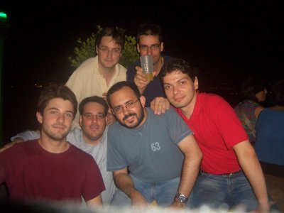
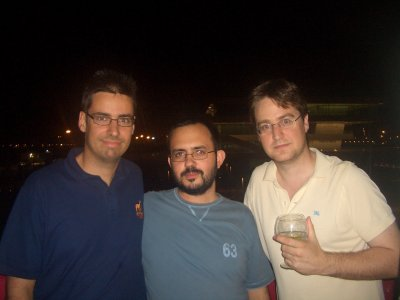
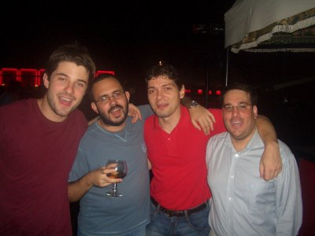
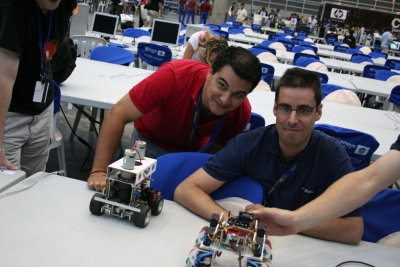
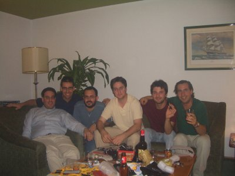

|
CampusBot 2006. Campus Party. Valencia |
Capítulo 9: Se cerró la caja de pandora...
Y el domingo llegó el momento del relax. Aunque nos lo habíamos pasado muy bien, es cierto que participar en la organización de la campusbot requiere mucho trabajo y resolver muchos marrones. Solemos estar todos en estado de tensión y estrés. Así que cuando llegó el domingo nos relajamos todos... y nos fuimos al puerto deportivo de Valencia para celebrarlo :-)
En la foto de la izquierda están, en la fila de abajo: Gedeón, Ricardo, Pepe e Iván, y en la fila de arriba Andrés y yo. En la foto de la derecha estamos Andrés , Pepe y yo.
|
 |
 |
Luego fuimos a otro sitio también cerca del puerto. La cosa se fué animando. Sólo hay que ver en la foto de la izquierda a Gedeón, Pepe, Iván (alias el fiestas) y Ricardo ;-)
Jose Pichardo se había ido esa mañana a Cádiz, en avión. Pero nos acordábamos mucho de él. La próxima vez que nos veamos seguramente será en su boda, en Julio ;-) Así que de momento pongo la foto de la derecha, en la que estamos Jose y yo.
|
 |
 |
Alejandro había estado en una cena con la organización de Campus Party. Al terminar se unió a nosotros y al final, como no podía ser de otra manera, terminamos en una de las habitaciones vaciando el minibar. La Campus Party 2006 había terminado. Y había sido todo un éxito. La caja de pandora se había cerrado.
|
 |
Con esta bitácora he intentado reflejar el espíritu de Campusbot. Un lugar de encuentro para todos aquellos amantes de la robótica y que por la distancia, sólo nos podemos ver de año en año. También es un lugar para intercambiar ideas y desarrollar cosas frikis. Rienda suelta a la imaginación, sin límites.
En Campusbot ha habido muchísimas más actividades y muchísimas más personas implicadas de las que aparecen aquí. Sólo he podido reflejar mis vivencias personales y hablar sobre las cosas de las que tenía fotos. Pero CampusBot es mucho más que todo esto.
|
|
En primer lugar dar las gracias a Alejando Alonso por haberme invitado a participar en este evento, y por haber hecho posible que disfrutásemos un año más de CampusBot. ¡Muchísimas gracias!. ¡Ah! Y muchísimas gracias por el patrocinio del Faro de la campus!!!! ;-)
A Andrés Prieto-Moreno por contar conmigo para el taller de robótica del skybot. Muchas gracias ;-) Muchas gracias también por conseguir el patrocinio de Ifara para el faro de la campus.
A Ricardo Gómez, Iván González y Gedeón Domínguez por su ayuda en el taller de robótica. ¡¡Muchísimas gracias!!
A Pedro Velasco, por su ayuda en el taller de robótica y su participación en el videostreaming del faro de la campus. ¡¡Muchas gracias!!
A Jose Pichardo y Pepe Ariza, por vuestra ayuda en todo. Siempre estábais ahí solucionando los marrones. ¡¡Muchas gracias!!
Al resto de colaboradores de CampusBot: María del Pozo Vázquez, Jose Manuel Peula, Francisco García, Susana Sáez, David Yáñez, Raúl Martín, Ángel Hernández Mejías. y Jose Antonio Casas. ¡¡Muchísimas gracias por vuestra ayuda y entusiasmo!! :-)
9/Oct/2006: Publicada la página en esta web